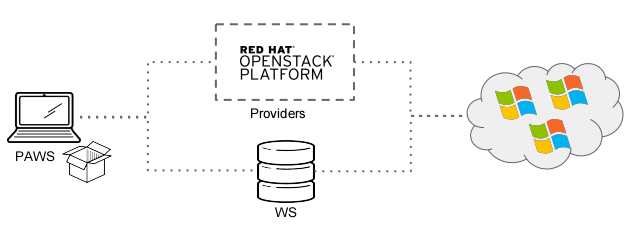

About¶
Paws is a Linux based tool to provision Windows systems and configure Windows services with a simpler way to test hybrid environments Linux and Windows
Benefits¶
- Create, build and destroy Windows test environments within minutes.
- Ability to use evaluation Windows images or internal pre-defined QCOW Windows images during trial period.
- Create fresh environments to validate bugs.
- Reduce the time spent on support and maintenance of “golden-environments”.
- Use native Windows language (PowerShell) to automate Windows server configurations.
- Easily share paws scripts to run in different test environments (eliminating need to create scripts that already exists).
Examples of usage¶
- developers, working in components that interacts with Windows platform can use PAWS to provision Windows with all configuration needed to verify their code changes.
- quality engineer, executing any type of tests for products running on hybrid environment Linux and Windows can use PAWS to provision the Windows environment with pre-defined configuration and ready to start the tests execution.
- developers, quality engineers and release engineers, can use PAWS to provison the Windows environment for a release dry-run before go to production. With PAWS groups the installation and workflow can be defined managing the reproducibility and avoiding left over data reducing risks of a production release.
- devOps, before apply changes in a hybrid environment Linux and Windows can use PAWS to replicate the Windows environment based on scripts.
Paws layers¶
Paws is composed of three elements (layers) shown below.
PAWS: Command line tool installed on a Linux machine.
Providers: The infrastructure that will host the Windows machines. See providers for all providers available at this current version and it might be expanded further for others such as AWS, GCE etc It is important to highlight that PAWS uses Ansible cloud modules to perform tasks to provision and teardown systems.
WS: Is a centralized repository where all PowerShell scripts will live. PAWS users can use the PowerShells in the repository or they can set PAWS to use PowerShells from another local repo/folder. This is all configurable by parameters.
Paws creates Windows environments using two main components:
1. Ansible to provision/teardown and communicate via SSH to remote Windows systems provisioned in PAWS providers as example in an Openstack cloud computing or in a local virtualized environment running on Libvirt.
2. Windows configuration scripts wrote in Windows PowerShell language which perform configuration actions.
Paws is NOT another tool to provision Windows systems and doesn’t intend to replace any configuration management tool.
Paws is a great choice to be used for spinning up Windows systems and performing a remote desktop connection or to be used by automation/CI requiring interactions with Windows environments.
We envision paws as the solution to efficiently spin up and configure free Windows systems leaving hybrid environments no longer an issue for development or testing purposes.
To get started, navigate to the side bar on the left to see how to install, use or contribute to paws.

{kind=link}